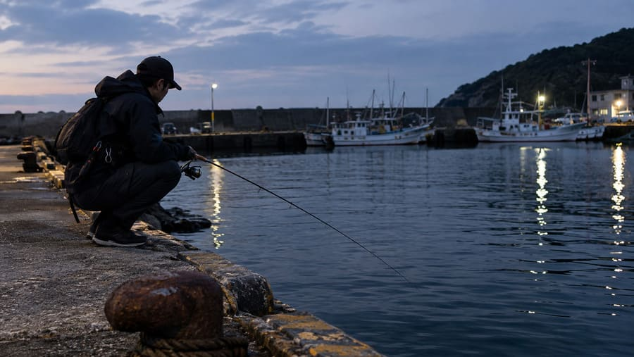

【チニング入門】ルアーでクロダイを狙うための考え方と実践テクニック

チニングは、フリーリグなどのワームを使ってクロダイ（チヌ）を狙うルアーフィッシングです。「クロダイならエサ釣りで十分なのに、なぜルアーなのか？」と思う方もいるかもしれません。しかし、チニングの面白さは魚を釣ることだけでなく、魚がいそうな場所を自分で探し、その日の「食わせ方」を見つけていく過程にあります。海底はどんな地形なのか。ルアーをどのくらいの速さで動かすのか。手元に伝わった「コツッ」という感触は、アタリなのか、それとも石に当たっただけなのか。見えない海底を想像しながらルアーを微調整し、クロダイが口を使う条件を自ら見つけ出すことが、チニングの大きな魅力です。なお、クロダイの生態やエサ釣りについては魚種解説の記事で紹介しているので、ここではルアーで狙うための考え方と実践テクニックに絞って解説します。
1. まず覚えたい「着底」とシンカーの考え方
チニングで最初に身につけたいのが、ルアーが海底に着いたことを確実に感じ取ることです。ボトムゲームは、底を取れなければ何も始まりません。
着底の確認は「すべての起点」
キャスト後は、ラインのたるみ方やロッドに伝わる感触から、シンカーが着底した瞬間を確認します。着底が分からないまま巻き始めると、ルアーが底から離れてしまい、狙った場所を探れません。毎回「着底を確認してから巻き始める」という手順を守れば、同じ条件でルアーを通せるようになります。
シンカーの重さは「底を感じられるか」で決める
「重いほうが釣れる」わけではありません。軽すぎると風や流れの影響で着底が分からなくなり、重すぎると浅場で底を叩きすぎて根掛かりが増えます。まずは着底が分かる重さを基準に、水深が深い場所や流れが強い場所では重く、浅くて穏やかな場所では軽くと調整していきましょう。
根掛かりが頻発するときは、重さだけでなく、シンカーの形状やルアーを通すコースも見直してみてください。
2. アクションのキモは「ステイ」にあり
チニングの基本操作は、底を感じながらゆっくり巻く「ズル引き」です。ただし、クロダイはルアーが動いている間よりも、動きが止まった瞬間に口を使うことがよくあります。巻くだけでなく「止める」ことを意識しましょう。
ズル引きと「止め」をセットで考える
砂地では滑らかに、石や貝殻のある場所ではゴツゴツとした感触が伝わります。この違いを感じ取れると、見えない底質を推測しながら探れるようになります。一定速度で巻いて反応がなければ、途中でルアーを止め、魚が追いつく時間を作ってみましょう。ただし、長く止めれば釣れるわけではありません。止める長さや巻く速度を変えながら、その日の反応があるパターンを探します。
反応がなければ「リフト＆フォール」
ズル引きで反応がないときは、ロッドを軽く持ち上げてワームを浮かせ、再び底へ落とすリフト＆フォールを試します。底を這う動きと、持ち上げて落とす動きでは、ワームの見え方が大きく変わります。ワームはカニを思わせるクロー系やエビを思わせるホッグ系が定番ですが、色よりも「底の甲殻類をどう演出するか」を軸に考えるのがコツです。

3. アタリの察知とタックル選び
チニングのアタリは、「コツッ」「モゾモゾ」といった小さな違和感で伝わることが多く、石に当たった感触や潮の流れによるラインの変化と区別しにくい場面もあります。違和感を感じたらすぐに大きく合わせず、まずはラインのたるみを取り、ロッドに魚の重さが乗るのを確認してからフッキングしましょう。
アタリがあるのに掛からないとき
アワセのタイミングだけでなく、フックの大きさがワームに合っているか、針先が鈍っていないか、ワームが破損していないかも確認します。操作より先に、道具の状態が原因になっていることも少なくありません。
掛けたあとは「潜らせない」
クロダイは見た目以上に力強く引き、障害物に潜ろうとします。ロッドの弾力とドラグを使って魚をいなし、強引に引っ張り続けないことが大切です。足元まで寄せたら、タモ網で安全に取り込みましょう。
ロッドは8フィート前後、ラインは「底の情報を伝えるセンサー」
ロッドは7〜9フィート、扱いやすさを重視するなら8フィート前後が目安で、ライトクラスのシーバスロッドでも流用できます。ラインは、操作感やアタリを伝えやすいPEラインに、障害物の擦れに強いフロロカーボンのリーダーを組み合わせるのが定番です。障害物が多い場所では、強度に余裕を持たせましょう。
4. 状況別ポイント攻略（地形・潮位・トップ）
河口・干潟は「境目」と「通り道」を探す
河口では、流れの速い場所と緩い場所の境目や、浅場から深くなる境目に注目します。ただし、流れが強すぎると底を取れないため、最初は底を感じながら操作できる場所を選びましょう。干潟では潮位によって魚の入れる範囲が変わるため、「潮が動いたときにどこが通り道になるか」まで想像できると、狙いが絞れます。
石積み・護岸は「石の途切れ」を打つ
石の上を引くだけでなく、砂地との境目や、石が途切れる場所を重点的に探ります。根掛かりが多い場所では、ルアーを通す角度を変えるのも有効です。また、遠投にこだわらず、足元から少し沖までを丁寧に探りましょう。
夏の浅場は「チヌトップ」
水温が高い時期の浅場では、ポッパーやペンシルベイトで水面を狙うチヌトップが成立します。クロダイが追ってくるのに食わないときは、ルアーの動きが速すぎるのかもしれません。アクションを小さくしたり、動かしたあとに短く止めたりして変化をつけましょう。水面が割れた瞬間に慌ててロッドを動かすと、針が掛かる前にルアーを引っ張ってしまうので、重みが乗ってから落ち着いてフッキングします。
干潟は泥に足を取られたり、潮位が上がって帰り道が水没したりすることがあります。釣り始める前に潮汐と退路を確認しましょう。石積みや護岸は濡れた石やカキ殻で滑りやすいため、無理に移動しないことも大切です。夜間はヘッドライトを必ず用意し、立入禁止区域や地域のルールを守って楽しみましょう。
5. チニングは「観察→仮説→検証」の釣り
釣れないときは、すぐにルアーを替えるのではなく、「底に届いているか」「場所は合っているか」「動かし方は合っているか」と順に疑っていきます。アタリがまったくない場合と、アタリはあるのに掛からない場合では、見直すポイントも異なります。
そして、1匹釣れたら、「どの場所で、どの重さのシンカーを使い、どう動かして食ったか」を思い出し、次のキャストで再現してみましょう。潮位や流れと魚の反応を記録しておけば、通う釣り場ごとの傾向もつかみやすくなります。
釣れなかった理由を考え、次の一投で何を変えるかを決める。その積み重ねで、偶然の1匹が再現できるパターンへと変わっていくことこそが、チニングの奥深さなのです。
📍 関東の生息・釣果スポット
※マップ上の赤いドットが釣れるポイントです。